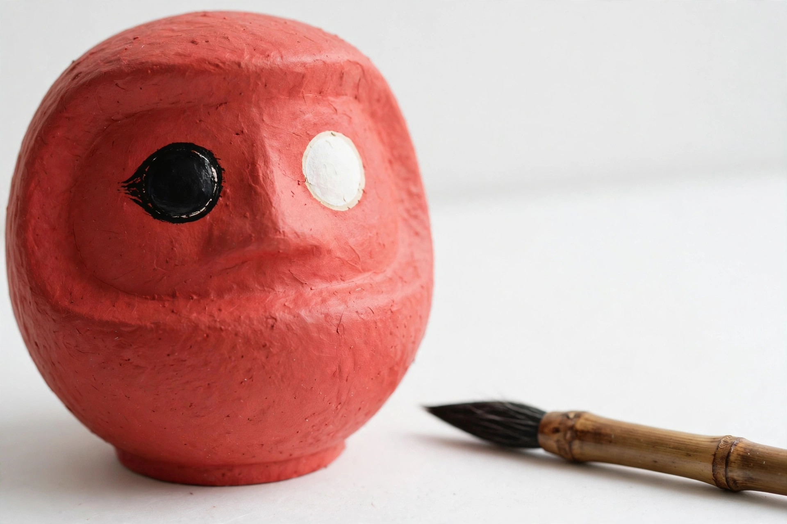

目入れの作法と、役目を終えたら ― だるまの供養まで

買ったばかりのだるまには、目が描かれていません。願いを込めて自分で目を入れる――これが「目入れ」です。どちらの目から入れるのか、いつ入れるのか、そして願いが叶ったあとはどうすればよいのか。この記事では、目入れの基本的な作法から供養までを順にご案内します。
願掛けのときは「左目」から
一般的な作法では、願いをかけるときに、だるまに向かって右側、つまりだるま自身の左目にあたる目を先に入れます。理由には諸説ありますが、昔は位の高い方を左とする考え方があり、大切な願いを託す目として左が選ばれてきた、という説明がよく知られています。
入れる道具は筆ペンや太めのマーカーが扱いやすく、黒く丸く、目の白い部分の内側に収まるように描くのが目安です。日取りは大安などの吉日や、挑戦を始める節目の日を選ぶ方が多いようです。置き場所は、毎日目に入る、少し高く清潔な場所がよいとされます。
- 願いをひとつ、具体的に心に決める
- だるまの左目（向かって右）に黒く丸く目を入れる
- よく目につく場所に置き、願いを意識して日々を過ごす
願いが叶ったら「右目」を入れる
願いが成就したら、残りの右目（向かって左）を入れます。両目がそろっただるまは、願いを見届けてくれた証しです。すぐに手放す必要はなく、お礼の気持ちを込めて、しばらく飾っておくご家庭や店舗も少なくありません。
願いが叶わなかったときは
期限までに願いが叶わなかった場合も、だるまが役目を果たさなかったと考える必要はありません。努力を見守ってくれたことに感謝し、区切りとして両目を入れる方もいれば、片目のまま供養に出す方もいます。どちらが正解という決まりはなく、ご自身が納得できる形を選んでください。
役目を終えたら ― 供養とお焚き上げ
一年を目安に、あるいは願いごとの節目に、だるまを神社やお寺へ納めて供養してもらうのが一般的な考え方です。多くの神社・寺院では正月や節分、だるま市などの時期に「お焚き上げ」や古いお守り・だるまの受付を行っています。購入したお店や製造元が回収を受け付けている場合もあります。
持ち込む前には、受け入れの時期や方法を各神社・寺院の案内で確認しましょう。自宅で処分する場合は、感謝を伝えてから塩で清めるといった方法が紹介されることもありますが、地域の分別ルールに従うことが前提です。大切なのは形そのものより、役目を終えたものへきちんとお礼を伝える気持ちです。
※目入れや供養の作法には地域や宗派、神社・寺院によって異なる考え方があります。ここで紹介したのは一般的に知られる目安です。不安なときは、納める先の神社・寺院へ直接ご確認ください。